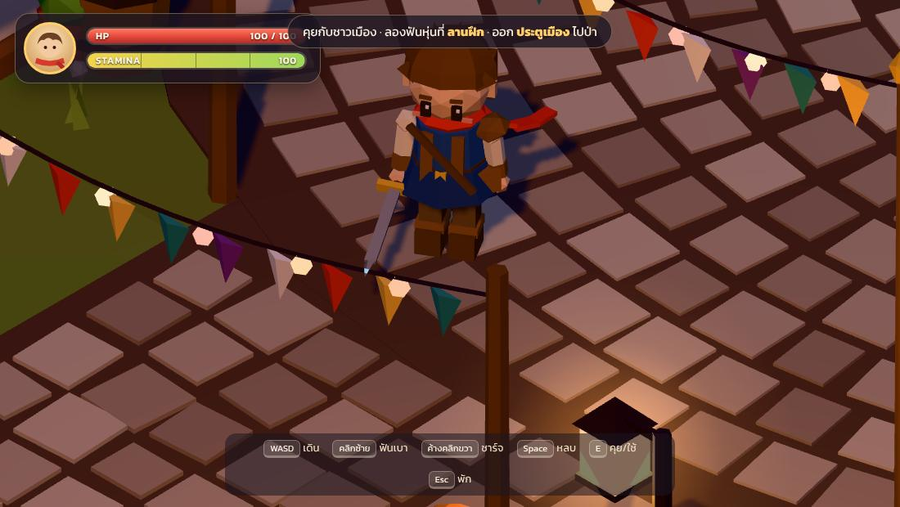
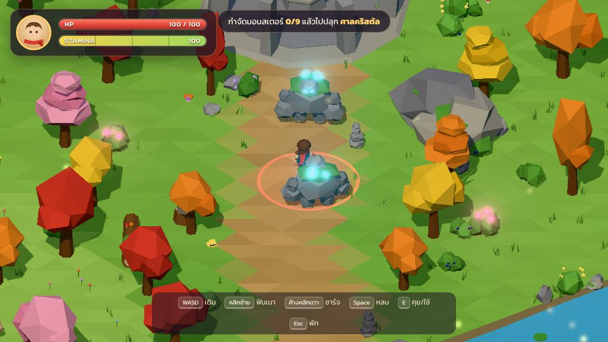
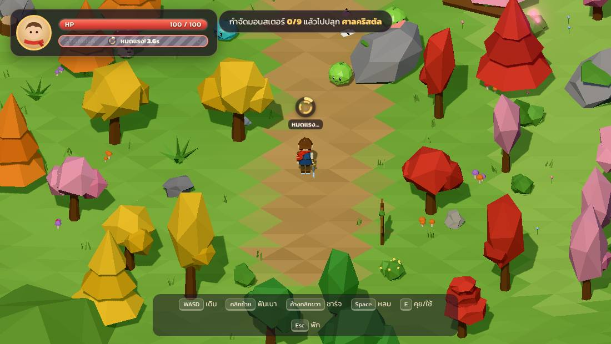
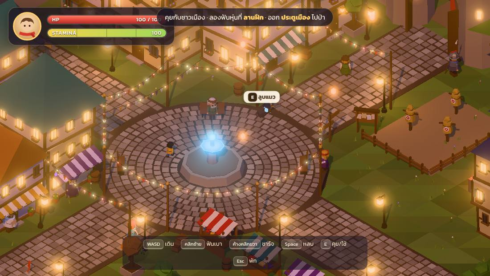

สารบัญ
เริ่มที่นี่
เกมนี้เขียนด้วย JavaScript และไลบรารี Three.js ซึ่งทำหน้าที่ "วาดภาพ 3D บนเบราว์เซอร์" อย่างเดียว ส่วนอื่นๆ ที่ game engine ปกติมีให้ (game loop, ระบบชน, AI, UI) เราเขียนเองทั้งหมด ข้อดีสำหรับการเรียนคือ ไม่มีเวทมนตร์ซ่อนอยู่ ทุกบรรทัดเปิดอ่านได้ และเมื่อเข้าใจแล้ว จะย้ายไปใช้ Godot หรือ Unity ได้ง่ายมาก เพราะแนวคิดเหมือนกัน
ต้องมี Node.js ก่อน แล้วรันคำสั่งในโฟลเดอร์โปรเจกต์:
npm install // ติดตั้ง three.js และ vite (ตัวรันเว็บสำหรับพัฒนา) npm run dev // เปิด http://localhost:5173 แก้โค้ดแล้วหน้าเว็บอัปเดตเอง npm test // รัน unit test ของระบบ stamina
ระหว่างอ่าน แนะนำให้เปิดเกมไว้อีกแท็บ และเปิดหน้าต่าง debug ด้วย F3 จะเห็นค่า FPS, จำนวน draw call, สถานะของตัวละคร และ stamina แบบสดๆ หรือใช้ URL ?level=forest&skip&debug เพื่อข้ามไปด่านป่าทันที
ภาพรวมทั้งเกม: ใครทำอะไร
โปรเจกต์แบ่งเป็นชั้นๆ ชั้นนอกสุดคือ Game ที่คุมจังหวะทั้งหมด ข้างในมี ด่าน (Level) ที่บรรจุ ตัวละคร (Entity) และแต่ละตัวละครประกอบจาก ชิ้นส่วนเล็ก (Component) ที่นำกลับมาใช้ซ้ำได้ เช่น หลอดเลือดใช้ร่วมกันทั้งผู้เล่นและมอนสเตอร์ กดที่กล่องเพื่อดูว่าแต่ละส่วนทำอะไร
หนึ่งเฟรมของเกม เกิดอะไรขึ้นบ้าง
เกมวาดภาพใหม่ประมาณ 60 ครั้งต่อวินาที ในแต่ละครั้ง (เรียกว่า เฟรม) โค้ดจะทำงานตามลำดับเดิมเสมอ กด "เล่น" เพื่อดูทีละขั้น ตัวอย่างนี้คือเฟรมที่ผู้เล่นเพิ่งคลิกซ้ายฟันโดนสไลม์
- วัดเวลา —
timer.update()หาdt= เวลาที่ผ่านไปจากเฟรมก่อน (เช่น 0.016 วินาที) ถ้ากำลัง hit-stop จะบังคับ dt = 0 - อ่านปุ่ม —
Inputรู้ว่า "คลิกซ้ายเพิ่งถูกกด" ผู้เล่นเก็บไว้ใน input buffer 0.22 วินาที - อัปเดตผู้เล่น — state machine อยู่ใน
locomotionเห็นปุ่มฟันเบา → เช็ค stamina (ใช้ 12) → เปลี่ยนเป็นattack - ถึงจังหวะดาบโดน — ที่ 0.11 วินาทีของท่า หาเป้าหมายในระยะ 1.75 ม. และมุม 120° แล้วเรียก
slime.takeHit() - มอนสเตอร์ตอบสนอง — ลดเลือด, กระพริบขาว, กระเด็น, เปลี่ยนสถานะเป็น
hurtและส่งตัวเลข damage ไปให้ UI - Juice — สั่ง hit-stop 0.045 วินาที, สั่นจอ, เล่นเสียง, ปล่อยประกายไฟจาก particle system
- ชนและดันออก — ทุกตัวที่ซ้อนกันถูกแยกออก แล้วดันออกจากต้นไม้/ตึก/ลำธาร
- กล้องตามตัวละคร — ค่อยๆ เลื่อนไปหาผู้เล่น + บวกแรงสั่นจอ
- อัปเดต UI — หลอด HP/stamina, ตัวเลขลอย (แปลงตำแหน่ง 3D เป็นพิกเซลบนจอ)
- วาดภาพ — วาดฉากทั้งหมด → เพิ่มแสงฟุ้ง (bloom) → แปลงสีขั้นสุดท้าย แล้วล้างสถานะ "เพิ่งกด" ของปุ่ม รอเฟรมถัดไป
Game Loop และ delta time
หัวใจของทุกเกมคือ loop ที่วนไม่รู้จบ: อ่านปุ่ม → อัปเดตโลก → วาดภาพ เบราว์เซอร์ช่วยเราด้วย requestAnimationFrame ที่เรียกฟังก์ชันของเราก่อนจอรีเฟรชทุกครั้ง
ปัญหาคือแต่ละเครื่องรีเฟรชไม่เท่ากัน จอทั่วไป 60 ครั้งต่อวินาที จอเกมมิ่ง 144 ครั้ง ถ้าเราเขียนว่า "ทุกเฟรมเดินไป 3 พิกเซล" คนที่ใช้จอ 144Hz จะเดินเร็วกว่าคนอื่นเกือบ 2.5 เท่า วิธีแก้คือคูณทุกการเคลื่อนที่ด้วย dt (เวลาที่ผ่านไปจากเฟรมก่อน)
frame(timestamp) {
this.timer.update(timestamp);
// จำกัด dt ไม่เกิน 1/20 วินาที กันตัวละครวาร์ปเวลาเครื่องค้าง
const realDt = Math.min(this.timer.getDelta(), 1 / 20);
// Hit-stop: หยุดโลกชั่วขณะตอนฟันโดน (dt = 0 → ทุกอย่างหยุดขยับ)
let dt = realDt * this.timeScale;
if (this.hitStopTimer > 0) { this.hitStopTimer -= realDt; dt = 0; }
this.level.update(dt); // ขยับทุกอย่างในด่าน
this.iso.update(realDt); // กล้อง
this.render(); // วาด
this.input.endFrame(); // ล้างสถานะ "เพิ่งกด"
}
dt ให้ด่าน แต่ส่ง realDt ให้กล้อง เพราะตอน hit-stop เราอยากให้โลกหยุด แต่จอยังสั่นอยู่ได้ เกมจริงหลายเกมจึงมี "นาฬิกา" มากกว่าหนึ่งเรือน เกมระดับใหญ่บางเกมใช้ fixed timestep (อัปเดตทีละ 1/60 วินาทีเป๊ะๆ) เพื่อให้ฟิสิกส์คงที่ อ่านต่อได้ที่บทความ Fix Your Timestep!พื้นฐาน Three.js ใน 5 คำ
Three.js ทำงานเหมือนกองถ่ายภาพยนตร์ มี 5 อย่างที่ต้องรู้จัก:
| คำ | เปรียบเหมือน | ในเกมนี้ |
|---|---|---|
| Scene | โรงถ่าย ที่วางทุกอย่างลงไป | game.scene แต่ละด่านเอา level.root มาใส่ |
| Camera | กล้องถ่ายภาพ | OrthographicCamera มุม isometric (บทถัดไป) |
| Renderer | ช่างล้างฟิล์ม แปลงฉากเป็นพิกเซล | WebGLRenderer + bloom ผ่าน EffectComposer |
| Mesh = Geometry + Material | นักแสดง = รูปร่าง + เครื่องแต่งกาย | กล่อง/กรวย/ทรงกลม + วัสดุ flatShading |
| Light | ไฟส่องฉาก | แสงฟ้า (Hemisphere) + ดวงอาทิตย์ (Directional) + โคมไฟ (Point) |
import * as THREE from 'three';
const scene = new THREE.Scene();
const camera = new THREE.OrthographicCamera(-8, 8, 7, -7, 0.1, 200);
camera.position.set(40, 40, 40); // มุม isometric: วางกล้องทิศ (1,1,1)
camera.lookAt(0, 0, 0);
const renderer = new THREE.WebGLRenderer({ antialias: true });
document.body.appendChild(renderer.domElement);
// Mesh = Geometry (รูปร่าง) + Material (ผิว)
const box = new THREE.Mesh(
new THREE.BoxGeometry(1, 1, 1),
new THREE.MeshStandardMaterial({ color: 0xd63a2f, flatShading: true }),
);
scene.add(box);
scene.add(new THREE.HemisphereLight(0xffffff, 0x445533, 1.5));
renderer.setAnimationLoop(() => { // game loop แบบง่ายที่สุด
box.rotation.y += 0.01;
renderer.render(scene, camera);
});
แค่ 20 บรรทัดนี้ก็ได้กล่องสีแดงหมุนในมุม isometric แล้ว ทั้งเกม Red Scarf คือการขยายโค้ดนี้ออกไปอย่างเป็นระเบียบนั่นเอง
กล้อง Isometric
กล้องในชีวิตจริงเป็นแบบ perspective ของไกลดูเล็ก เส้นขนานวิ่งไปบรรจบกัน ส่วนเกม isometric ใช้กล้อง orthographic ที่ไม่มีระยะลึก ของไกลกับใกล้ขนาดเท่ากัน เส้นขนานยังขนานเสมอ ภาพจึงดูเหมือนโมเดลจำลองหรือแผนที่ในบอร์ดเกม
สูตร isometric แท้: วางกล้องที่ทิศ (1, 1, 1) ของจุดที่มอง ได้มุมหมุน 45° และมุมก้ม 35.264° (= atan(1/√2)) ซึ่งทำให้แกน X, Y, Z ยาวเท่ากันบนจอ
ดูเสาที่อยู่ไกลและใกล้: ใน perspective ขนาดต่างกันและเส้นเอียงเข้าหากัน ใน orthographic ทุกต้นสูงเท่ากันเป๊ะ
กด W ต้องเดิน "ขึ้นจอ" ไม่ใช่ "ไปทาง +Z"
เพราะกล้องเฉียง 45° ทิศ "ขึ้นจอ" จึงไม่ตรงกับแกนใดๆ ในโลก เราต้องแปลงปุ่มเป็นทิศบนพื้นโลก ด้วยเวกเตอร์สองตัวที่คำนวณครั้งเดียว ลองกดปุ่มหรือคลิกที่กล่องนี้แล้วกด W A S D
// กล้องอยู่ที่ทิศ (+1,+1,+1) มองไปทาง (-1,-1,-1)
// → เดินขึ้นบนจอ = ไปทาง (-x, -z), เดินไปขวาจอ = ไปทาง (+x, -z)
export const SCREEN_UP = new THREE.Vector3(-1, 0, -1).normalize();
export const SCREEN_RIGHT = new THREE.Vector3( 1, 0, -1).normalize();
// ใน Player.js
const mv = input.moveVector(); // {x, y} จาก WASD ยาวไม่เกิน 1
moveDir.addScaledVector(SCREEN_RIGHT, mv.x) // แปลงเป็นทิศในโลก
.addScaledVector(SCREEN_UP, mv.y);
moveVector() หารด้วยความยาว (normalize) เสมอ ไม่งั้นกดเฉียง W+D จะได้เวกเตอร์ยาว √2 ≈ 1.41 แปลว่าเดินเฉียงเร็วกว่าเดินตรง 41% (บั๊กคลาสสิกของเกมมือใหม่)ปั้นโมเดล low poly ด้วยโค้ด
เกมนี้ไม่มีไฟล์โมเดลเลยสักไฟล์ ทุกอย่างสร้างจาก รูปทรงพื้นฐาน ของ Three.js มาต่อกันเหมือนเลโก้ ลุค low poly มาจาก 4 อย่าง:
- flatShading — แต่ละหน้าสามเหลี่ยมเป็นสีเรียบสีเดียว เห็นเหลี่ยมชัด
- จำนวนด้านน้อย — ทรงกระบอก 6–8 ด้าน, ทรงกลมแบบ icosahedron ระดับ 0–1
- ชุดสีจำกัด — ไม่ใช้ texture เลย ใช้สีเรียบจาก palette ที่เข้ากัน
- เขย่าจุดยอด (jitter) — ขยับมุมนิดหน่อยแบบสุ่ม หิน/ต้นไม้จะดูเป็นธรรมชาติ ไม่เป๊ะจนแข็ง
ลองกดปุ่มด้านล่างเพื่อเปิด-ปิดแต่ละเทคนิคกับ "ไคจิ๋ว" ที่สร้างด้วยโค้ด 70 บรรทัด (ลากเพื่อหมุนดู)
"แยกชิ้นส่วน" ให้เห็นว่าตัวละครหนึ่งตัวคือกล่อง กรวย ทรงกระบอก หลายสิบชิ้นวางซ้อนกัน ส่วน "low poly" ปิดแล้วจำนวนสามเหลี่ยมพุ่งหลายเท่า แต่ความน่ารักลดลง
โครงสร้างแบบหุ่นมีข้อต่อ (hierarchy)

root (หมุนทั้งตัว = หันหน้า)
└─ roll (จุดหมุนตอนตีลังกาหลบ)
└─ body (ขยับขึ้นลงตอนเดิน)
└─ hips
├─ legL / legR แกว่งตอนเดิน
└─ torso บิดตัวตอนฟัน
├─ neck ─ head ผม ตา หู ผ้าพันคอ
├─ shoulderL ─ handL
└─ shoulderR ─ handR ─ wristR ─ ดาบ
หลักสำคัญคือ ลูกจะขยับตามพ่อเสมอ หมุนไหล่ แขน มือ และดาบก็หมุนตาม หมุน root ทั้งตัวก็หันตาม ทำให้แอนิเมชันง่ายมาก (บทที่ 12) ฟังก์ชันเดียว buildHumanoid() สร้างได้ทั้งไคและ NPC อีก 10 คน แค่เปลี่ยนตัวเลือก เช่น สีเสื้อ ทรงผม หมวก หนวด ผ้ากันเปื้อน
ตึกแฟนตาซีที่ "ไม่ตั้งตรง"
buildTower() เดียวกัน แค่ใส่ seed ต่างกันfor (let i = 0; i < o.floors; i++) {
if (i > 0) {
fw = fw * rng.range(0.93, 1.14); // ชั้นบนใหญ่/เล็กลงนิดหน่อย
ox = ox + rng.range(-0.4, 0.4); // เลื่อนจุดกึ่งกลาง = เยื้อง
rotY += rng.range(-0.11, 0.11); // บิดรอบแกนตั้ง ~6°
}
floor.position.set(ox, y, oz);
floor.rotation.set(rng.range(-0.025, 0.025), rotY, rng.range(-0.03, 0.03)); // เอียงนิดๆ
// ...ผนัง เสาไม้ คานพื้น หน้าต่าง ระเบียง
y += h; // ชั้นถัดไปวางต่อด้านบน
}
Math.random() สุ่มไม่ซ้ำทุกครั้งที่โหลด เมืองจะหน้าตาเปลี่ยนไปเรื่อยๆ เกมนี้ใช้ตัวสุ่มที่ใส่ seed ได้ (makeRng(20261103)) seed เดิม = ผลสุ่มชุดเดิม เมืองจึงหน้าตาเหมือนเดิมทุกครั้ง แต่ถ้าอยากได้เมืองใหม่ แค่เปลี่ยนตัวเลข seedState Machine: สมองของตัวละคร
ถ้าเขียนแบบมือใหม่ จะได้ตัวแปร true/false เต็มไปหมด เช่น isAttacking, isDodging, isCharging แล้วสักวันจะเจอบั๊กที่ "ฟันไปด้วย กลิ้งไปด้วย" เพราะลืมเช็คสักตัว
Finite State Machine (FSM) แก้ปัญหานี้: ตัวละครอยู่ใน สถานะเดียว ในแต่ละเวลา แต่ละสถานะรู้เองว่ารับปุ่มอะไรได้ และจะไปสถานะไหนต่อ ลองกดปุ่มด้านล่าง (ตัวเลขทั้งหมดเหมือนในเกมจริง และปรับให้ช้าลงเพื่อดูการเปลี่ยนสถานะได้)
export class StateMachine {
constructor(states, initial) {
this.states = states;
this.time = 0; // อยู่ในสถานะนี้มากี่วินาทีแล้ว
this.change(initial);
}
change(name, params) {
this.current?.exit?.(); // ออกจากสถานะเดิม
this.name = name;
this.current = this.states[name];
this.time = 0;
this.current.enter?.(params); // เข้าสถานะใหม่
}
update(dt) {
this.time += dt;
this.current?.update?.(dt);
}
}
มอนสเตอร์ก็ใช้ FSM ตัวเดียวกัน แต่สถานะต่างกัน: idle → chase → windup → attack → recover → chase จุดที่สำคัญที่สุดคือ windup (ช่วงง้าง) ที่มีวงสีแดงบนพื้นเตือนผู้เล่น และ recover (ช่วงหอบหลังโจมตี) ที่เปิดให้ผู้เล่นสวนกลับ

windup ยกแขนสูงและวงเตือนสีแดงค่อยๆ เต็ม ผู้เล่นมีเวลา 1.05 วินาทีในการหลบระบบต่อสู้: ดาบโดนหรือไม่โดน?
เกมนี้ไม่ได้เช็คว่าใบดาบ 3D ชนกับโมเดลมอนสเตอร์จริงๆ (ยากและช้า) แต่ใช้วิธีที่เกมแอคชันส่วนใหญ่ใช้: เช็ค ระยะ และ มุม บนพื้นราบ ณ จังหวะที่ดาบโดน (active frame)
- ระยะ: ระยะห่าง ≤ ระยะดาบ + รัศมีของเป้าหมาย
- มุม: ใช้ dot product ระหว่าง "ทิศที่หันหน้า" กับ "ทิศไปหาเป้าหมาย" ได้ค่า cos ของมุม แล้วเทียบกับครึ่งหนึ่งของมุมกวาด
ลองขยับเมาส์ (หรือลากนิ้ว) เพื่อย้ายมอนสเตอร์สีเขียว
const dx = target.position.x - this.position.x;
const dz = target.position.z - this.position.z;
const dist = Math.hypot(dx, dz);
if (dist > range + target.radius) continue; // ไกลเกิน
const fx = Math.sin(this.facing), fz = Math.cos(this.facing); // ทิศที่หันหน้า
const cos = (dx * fx + dz * fz) / dist; // dot product
if (Math.acos(cos) > halfArc) continue; // อยู่นอกมุมกวาด
target.takeHit({ damage, knockback, dir, heavy }); // โดน!
ตัวเลขของแต่ละท่า
| ท่า | Stamina | Damage | ระยะ | มุม | จุดเด่น |
|---|---|---|---|---|---|
| ฟันเบา จังหวะ 1–2 | 12 | 8–10 | 1.75 ม. | 120° | เร็ว 0.34 วินาที ต่อคอมโบได้ |
| ฟันเบา จังหวะ 3 | 12 | 12–14 | 1.95 ม. | 120° | ฟันจากบนลงล่าง กระเด็นแรงกว่า |
| ฟันชาร์จ | 20–40 | 25–60 | 2.0–2.9 ม. | 360° | หมุนรอบตัว ทำให้โกเลมสะดุ้งได้ |
| กลิ้งหลบ | 20 | – | ≈3 ม. | – | อมตะช่วง 0.03–0.32 วินาที |
superArmor: true ใน config ฟันเบาลดเลือดได้แต่ไม่ทำให้มันสะดุ้ง ผู้เล่นจึงต้องหาจังหวะช่วงที่มันหอบหลังทุบ (recover 1.3 วินาที) แล้วฟันชาร์จใส่ นี่คือวิธีออกแบบให้ศัตรูแต่ละชนิด "บังคับ" ให้ผู้เล่นใช้ท่าต่างกันระบบ Stamina
Stamina ทำให้ผู้เล่นต้อง คิดก่อนกด ถ้าไม่มี ผู้เล่นจะรัวฟันอย่างเดียว กติกาของเกมนี้:
- ทำท่าได้เมื่อยังไม่หมดแรงและ stamina > 0 (แรงเหลือน้อยกว่าที่ท่าใช้ก็ยังทำได้ แต่หลอดจะหยุดที่ 0)
- หยุดใช้แรง 1 วินาที แล้วค่อยๆ ฟื้น 25 ต่อวินาที
- ระหว่างชาร์จดาบ หลอดจะไม่ฟื้น
- ถ้าหลอดถึง 0 → หมดแรง 4 วินาที ทำท่าไม่ได้ เดินช้าลงครึ่งหนึ่ง มีวง loading เหนือหัว
- พ้นช่วงหมดแรง → ได้ stamina คืน 50 (ครึ่งหลอด)

spend(amount) {
if (!this.canAct()) return false; // หมดแรงอยู่ → ทำไม่ได้
this.value = Math.max(0, this.value - amount);
this.sinceUse = 0; // เริ่มนับเวลาพักใหม่
if (this.value <= 0) this._becomeExhausted();
return true;
}
update(dt) {
if (this.exhausted) {
this.exhaustTimer -= dt;
if (this.exhaustTimer <= 0) {
this.exhausted = false;
this.value = this.cfg.recoverTo; // ฟื้นกลับมาครึ่งหลอด
this.events.emit('recovered'); // บอก HUD/เสียง/เอฟเฟกต์
}
return;
}
this.sinceUse += dt;
if (!this.holdRegen && this.sinceUse >= this.cfg.regenDelay)
this.value = Math.min(this.max, this.value + this.cfg.regenRate * dt);
}
tests/stamina.test.js มี 8 เทสต์ เช่น "พ้น cooldown แล้วต้องได้ครึ่งหลอดพอดี" ส่วนการแสดงผล (HUD, วง loading, เสียง) ใช้วิธี ฟัง event แทน ทำให้แยกส่วนกันชัดเจนGame Feel: ทำให้การฟัน "หนักมือ"
ตัวเลข damage เท่ากัน แต่ความรู้สึกต่างกันลิบลับ ขึ้นอยู่กับ feedback ที่เกมส่งกลับมา นักพัฒนาเรียกสิ่งนี้ว่า juice ลองปิดเปิดทีละอย่าง แล้วกด "ฟัน!" (หรือคลิกที่ภาพ) เพื่อรู้สึกถึงความต่าง
| เทคนิค | ทำอะไร | ในเกมนี้ |
|---|---|---|
| Hit-stop | หยุดโลกเสี้ยววินาทีตอนดาบโดน สมองจะรับรู้ว่า "มีแรงปะทะ" | ฟันเบา 0.045 วิ, ฟันชาร์จสูงสุด 0.14 วิ |
| Screen shake | สั่นกล้อง ยิ่งแรงยิ่งสั่น ใช้ค่ายกกำลังสอง ให้สั่นแรงแค่ตอนต้นแล้วหายเร็ว | IsoCamera.shake() |
| Flash | เปลี่ยนสีวัสดุเป็นขาวแป๊บนึง บอกชัดว่า "ตัวนี้โดน" | ปรับ material.emissive |
| Knockback | ผลักเป้าหมายตามทิศที่ฟัน ตัวหนักกระเด็นน้อย | แรง ÷ mass (โกเลม mass 4) |
| Squash & stretch | บีบ-ยืดรูปร่าง หลักการแอนิเมชันของดิสนีย์ | สไลม์บีบตัวก่อนกระโดด ยืดตัวกลางอากาศ |
| Telegraph | เตือนก่อนโจมตี ให้ผู้เล่นมีเวลาตอบสนอง (ความยุติธรรม) | วงสีแดงที่ค่อยๆ เต็ม + ท่าง้าง |
| Anticipation | ท่าเตรียมก่อนท่าจริง | โกเลมยกแขน เห็ดพองหมวก ไคดึงดาบไปด้านหลังตอนชาร์จ |
อ่านต่อ: Masahiro Sakurai (ผู้สร้าง Kirby, Smash Bros.) อธิบาย hit-stop ไว้ใน วิดีโอนี้ และ Jan Willem Nijman จาก Vlambeer มีทอล์กคลาสสิก The Art of Screenshake
Collision: ไม่เดินทะลุกำแพง
เกม isometric ส่วนใหญ่ไม่ต้องใช้ physics engine เต็มรูปแบบ เพราะตัวละครเดินบนพื้นราบ เราจึงมองทุกอย่างจาก "ด้านบน" เป็น 2D และใช้รูปทรงแค่ 2 แบบ
- วงกลม: ตัวละคร ต้นไม้ หิน เสา และลำธาร (วงกลมเรียงต่อกัน)
- กล่องไม่หมุน (AABB): ตึก แผงร้าน กำแพง
เมื่อซ้อนกัน เราไม่ได้หยุดตัวละคร แต่ ดันออก ไปตามทิศที่สั้นที่สุด ผลลัพธ์คือตัวละคร "ไถลเลียบกำแพง" ได้เองโดยไม่ต้องเขียนโค้ดเพิ่ม ลองลากวงกลมสีส้ม
// 1) หาจุดบนกล่องที่ใกล้จุดศูนย์กลางวงกลมที่สุด (clamp)
const cx = Math.max(b.minX, Math.min(pos.x, b.maxX));
const cz = Math.max(b.minZ, Math.min(pos.z, b.maxZ));
// 2) ถ้าระยะถึงจุดนั้น < รัศมี แปลว่าชน
const dx = pos.x - cx, dz = pos.z - cz;
const dist = Math.hypot(dx, dz);
if (dist < radius) {
// 3) ดันออกไปตามทิศจากจุดใกล้สุด เป็นระยะเท่าที่ซ้อนอยู่
pos.x += (dx / dist) * (radius - dist);
pos.z += (dz / dist) * (radius - dist);
}
แอนิเมชันด้วยโค้ด และผ้าพันคอที่ปลิว
เกมใหญ่ใช้โปรแกรมอย่าง Blender ทำแอนิเมชันเป็นคีย์เฟรม เกมนี้ใช้ procedural animation คือคำนวณท่าทางสดๆ ทุกเฟรมด้วยคณิตศาสตร์ง่ายๆ:
- เดิน: ขาซ้าย =
sin(phase) × 0.75, ขาขวา =−sin(phase) × 0.75, แขนแกว่งสวนทาง, ตัวเด้งขึ้นลงด้วย|cos(phase)| - ฟัน: หมุนไหล่จากมุมหนึ่งไปอีกมุมด้วย easing ตามเวลาของท่า
- เปลี่ยนท่าลื่นๆ: ทุกเฟรมขยับท่าปัจจุบันเข้าหาท่าเป้าหมายทีละนิด
pose += (target − pose) × (1 − e−rate·dt)สูตรนี้ไม่ขึ้นกับ FPS
ส่วนผ้าพันคอ ใช้ Verlet integration เทคนิคฟิสิกส์ที่ง่ายที่สุดสำหรับเชือกและผ้า: แทนผ้าด้วยจุดหลายจุด แต่ละเฟรมให้ทุกจุดเคลื่อนที่ตามความเร็วเดิม (= ตำแหน่งตอนนี้ − ตำแหน่งเฟรมก่อน) บวกแรงโน้มถ่วง แล้วดึงจุดที่ติดกันให้ห่างเท่าเดิม ขยับเมาส์ในกรอบด้านล่างเพื่อลากคอเสื้อ
ลองปิด "ดึงระยะ" แล้วจะเห็นว่าจุดแต่ละจุดหลุดออกจากกัน การ constraint คือสิ่งที่ทำให้มันเป็นผ้าผืนเดียว
for (let i = 1; i < pts.length; i++) {
const vx = (p.x - prev[i].x) * damping; // ความเร็ว = ตำแหน่งตอนนี้ − ตำแหน่งเฟรมก่อน
prev[i].copy(p);
p.x += vx + windX * dt * dt; // เคลื่อนที่ + แรงภายนอก
p.y += vy - gravity * dt * dt;
}
pts[0].copy(neckPosition); // ตรึงจุดแรกไว้ที่คอ
for (let i = 1; i < pts.length; i++) { // ดึงจุดที่ติดกันให้ห่าง segLen เท่าเดิม
const d = pts[i].clone().sub(pts[i - 1]);
pts[i].copy(pts[i - 1]).addScaledVector(d, segLen / d.length());
}
ออกแบบด่าน isometric และทำให้เกมลื่น

กฎทองของด่าน isometric
- ของสูงไว้ด้านหลัง ของเตี้ยไว้ด้านหน้า — กล้องมองจากมุมล่างขวาเสมอ ตึกสูงจึงอยู่ฝั่ง −X/−Z (บนจอ) ส่วนฝั่ง +X/+Z (ล่างจอ) เป็นแผงร้าน สวน และรั้วพุ่มไม้เตี้ย ตัวละครจะไม่ถูกบัง
- ผนังด้านที่กล้องมองไม่เห็นไม่ต้องตกแต่ง — ด้าน −X และ −Z ของตึกไม่มีวันอยู่ในภาพ หน้าต่างจึงใส่แค่ 2 ด้าน ประหยัดไปครึ่งหนึ่ง
- เงาทะลุ (silhouette) — ถ้าไคเดินไปหลังต้นไม้ จะเห็นเป็นเงาสีฟ้า ทำโดยวาดโมเดลซ้ำด้วย
depthFunc = GreaterDepthซึ่งวาดเฉพาะส่วนที่ "ถูกบัง" - ควบคุมเส้นทางด้วยฉาก — ลำธารแบ่งป่าเป็นสองฝั่ง มีสะพานเป็นทางข้ามทางเดียว ผู้เล่นจึงเดินผ่านโซนมอนสเตอร์ตามลำดับที่ออกแบบไว้ โดยไม่ต้องมีกำแพงล่องหน
- อย่ารก — ป่ามีทุ่งหญ้าโล่งเป็นหย่อมๆ (กำหนดในโค้ดว่าห้ามวางต้นไม้) เป็นพื้นที่ต่อสู้ และช่วยให้สายตาได้พัก
Draw call: ศัตรูตัวจริงของความลื่น
ทุกครั้งที่ CPU สั่ง GPU ให้วาดวัตถุหนึ่งชิ้น เรียกว่า draw call GPU วาดสามเหลี่ยมล้านชิ้นได้สบาย แต่ draw call เป็นพันครั้งต่อเฟรมจะทำให้กระตุก เมืองโคมไฟประกอบด้วยชิ้นส่วนเล็กๆ (หน้าต่าง ก้อนหิน กระถาง) 8,736 ชิ้น
เทคนิค vertex color batching ใน bakeStatic() ย้าย "สี" ไปเก็บไว้ที่จุดยอดแต่ละจุด แล้วรวมชิ้นที่ไม่ขยับทั้งหมดเป็นก้อนเดียว ผลลัพธ์เหลือ 23 ชิ้น หน้าตาเหมือนเดิมทุกพิกเซล
| เทคนิค | ใช้กับ | ก่อน | หลัง |
|---|---|---|---|
bakeStatic() รวมของนิ่ง | ตึก ถนน ต้นไม้ หิน หญ้า | 8,736 mesh | 23 mesh |
compactRig() รวมชิ้นในข้อต่อเดียวกัน | ไค NPC มอนสเตอร์ | ~70 ต่อตัว | ~15 ต่อตัว |
InstancedMesh | อนุภาคประกายไฟ ฝุ่น ใบไม้ | 900 mesh | 2 draw call |
| Glow sprite แทนไฟจริง | โคมไฟส่วนใหญ่ | ใช้ PointLight จริงแค่ 8 ดวง | |
userData.dynamic = true เพื่อไม่ให้ถูกรวมเสียงสังเคราะห์ และ UI สองแบบ
เกมนี้ไม่มีไฟล์เสียงเลย ทุกเสียงสร้างด้วย Web Audio API จากวัตถุดิบ 2 อย่าง: oscillator (คลื่นเสียงโทนต่างๆ) กับ noise (เสียงซ่าที่เอามากรองความถี่) แล้วปั้นความดังด้วย envelope (ดังเร็ว จางช้า) กดฟังได้เลย
เสียง "ฟันเบา" คือ noise ที่ผ่าน bandpass filter แล้วเลื่อนความถี่จาก 900 ไป 3,200 Hz ใน 0.13 วินาที ได้เสียงวืด
UI ติดจอ vs UI ลอยในโลก
HUD (หลอดเลือด stamina เป้าหมาย) เป็น HTML/CSS ธรรมดาวางทับ canvas ตัวหนังสือคมชัด แต่งด้วย CSS ได้ง่าย และใช้ฟอนต์ไทยได้ทันที
World UI (ตัวเลข damage, หลอดเลือดมอนสเตอร์, วง loading เหนือหัว) ก็เป็น HTML เช่นกัน แต่ทุกเฟรมเราแปลงตำแหน่ง 3D เป็นพิกเซลด้วย vector.project(camera) แล้วย้าย div ไปวางตรงนั้น
ทำต่อเอง
วิธีเรียนที่ดีที่สุดคือแก้โค้ดแล้วดูผล เรียงจากง่ายไปยาก:
- เปลี่ยนสีผ้าพันคอของไคเป็นสีที่ชอบ (ค้นหา
0xd63a2fในsrc/models/humanoid.js)ง่าย - ลดค่า stamina ของฟันเบาเหลือ 5 ใน
src/config.jsแล้วสังเกตว่าเกมง่ายขึ้นแค่ไหน ทำไมนักออกแบบถึงไม่ทำแบบนั้นง่าย - เพิ่ม NPC คนใหม่ในเมือง พร้อมบทพูดของตัวเอง ใน
_spawnNPCs()ง่าย - เพิ่มต้นไม้สีที่ 6 (เช่น สีม่วง) ใน
TREE_COLORSของsrc/models/nature.jsกลาง - ทำให้มอนสเตอร์ดรอปผลไม้ฟื้นเลือดตอนตาย 25%กลาง
- เพิ่มท่าวิ่งเร็ว (sprint) ที่กด Shift ค้างแล้วค่อยๆ ใช้ staminaกลาง
- สร้างมอนสเตอร์ชนิดใหม่ เช่น ค้างคาวที่บินพุ่งเป็นเส้นตรง โดยสืบทอดคลาส
Enemyแล้ว overridestartWindup/updateAttackยาก - เปลี่ยน game loop เป็น fixed timestep แล้วเทียบว่า i-frame ของการกลิ้งแม่นขึ้นไหมบนเครื่องที่ FPS ต่ำยาก
แหล่งเรียนต่อ
| หัวข้อ | แหล่ง |
|---|---|
| Three.js | three.js manual (มีบท "Making a Game") · Discover three.js · Three.js Journey (คอร์สเสียเงิน) |
| รูปแบบโค้ดเกม | Game Programming Patterns (อ่านฟรี) บท Game Loop, State, Component, Update Method |
| Game feel | Juice it or Lose it · Enemy attacks and telegraphing |
| Collision | LearnOpenGL: Collision detection |
| ย้ายไปใช้ engine | Godot: Your first 3D game (แนวคิดเดียวกับเกมนี้เกือบทั้งหมด) |
| โมเดลสวยกว่านี้ | ปั้นเองด้วย Blender หรือใช้ asset ฟรี CC0 จาก Kenney / Quaternius แล้วโหลดไฟล์ .glb ด้วย GLTFLoader |
เทียบกับ Godot และ Unity
| ในเกมนี้ | Godot | Unity |
|---|---|---|
Game.frame() + update(dt) | _process(delta) | Update() + Time.deltaTime |
THREE.Group ซ้อนกัน | Node tree | GameObject + Transform |
OrthographicCamera | Camera3D, projection = Orthogonal | Camera, Projection = Orthographic |
CollisionWorld (เขียนเอง) | CharacterBody3D + CollisionShape3D | CharacterController / Collider |
StateMachine (เขียนเอง) | เขียนเอง หรือ AnimationTree | Animator state machine |
Events | Signals | C# events / UnityEvent |
| HUD เป็น HTML | Control nodes | UI Toolkit / Canvas |
คำศัพท์
- Frame / FPS
- ภาพหนึ่งภาพที่เกมวาด / จำนวนภาพต่อวินาที
- Delta time (dt)
- เวลาที่ผ่านไปจากเฟรมก่อน ใช้คูณการเคลื่อนที่ให้เร็วเท่ากันทุกเครื่อง
- Mesh / Geometry / Material
- วัตถุ 3D / รูปร่าง (จุดและสามเหลี่ยม) / ผิว (สี ความเงา)
- Orthographic
- กล้องไม่มีระยะลึก ของไกล-ใกล้ขนาดเท่ากัน ใช้ทำมุมมอง isometric
- Draw call
- คำสั่งวาดที่ CPU ส่งให้ GPU หนึ่งครั้ง ยิ่งน้อยยิ่งลื่น
- FSM
- Finite State Machine ตัวละครอยู่ในสถานะเดียวในแต่ละเวลา
- Active frame
- ช่วงเวลาในท่าโจมตีที่ทำ damage จริง
- Hit-stop
- หยุดภาพเสี้ยววินาทีตอนโจมตีโดน ให้รู้สึกถึงแรงปะทะ
- i-frames
- Invincibility frames ช่วงที่ตัวละครไม่รับ damage เช่น กลางท่ากลิ้ง
- Telegraph
- สัญญาณเตือนก่อนศัตรูโจมตี
- Knockback
- แรงผลักให้กระเด็นเมื่อโดนโจมตี
- Super armor
- โดนตีแล้วไม่สะดุ้ง ท่าไม่ถูกขัดจังหวะ
- Input buffer
- จำปุ่มที่กดล่วงหน้าไว้สักพัก ให้คอมโบต่อได้ลื่น
- Lerp
- Linear interpolation ค่อยๆ ขยับค่าจาก A ไป B
- Verlet
- วิธีคำนวณฟิสิกส์จากตำแหน่งปัจจุบันและตำแหน่งก่อนหน้า เหมาะกับเชือกและผ้า
- Seed
- ตัวเลขตั้งต้นของตัวสุ่ม seed เดิมได้ผลสุ่มชุดเดิม
- Bloom
- เอฟเฟกต์แสงฟุ้งรอบของที่สว่างมาก เช่น โคมไฟ
- Batching / Instancing
- รวมหลายวัตถุให้วาดในคำสั่งเดียว เพื่อลด draw call